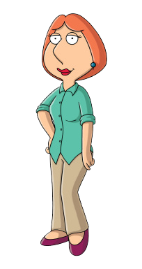
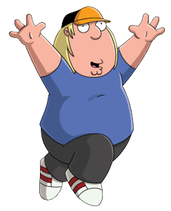
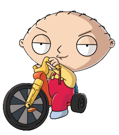

Peter Griffin — The Funny Father
Peter is the father of the Griffin family. He is known for his silly behavior and funny ideas. He enjoys spending time with his friends and family. His decisions often lead to unexpected situations.
Every family member has a different personality!
Peter is the father of the Griffin family. He is known for his silly behavior and funny ideas. He enjoys spending time with his friends and family. His decisions often lead to unexpected situations.

Lois is the mother of the Griffin family. She often tries to keep the household organized. She takes care of her children and deals with the family's unusual problems. She is an important part of keeping the family together.
Meg is the oldest child in the Griffin family. She is a teenager who wants to fit in and make friends. She sometimes feels ignored by her family. Her experiences are often part of the show's humor.

Chris is Peter and Lois's son. He enjoys video games and spending time at home. He is usually friendly but can be easily confused. His funny experiences are part of many family stories.

Stewie is the youngest child in the Griffin family. He is a baby with an unusually intelligent mind. He enjoys inventing things and making complicated plans. His conversations with Brian are often funny.
Brian is the Griffin family's talking dog. He can speak like a human and often joins family conversations. He enjoys reading, writing, and discussing different ideas. He is also one of Stewie's closest companions.